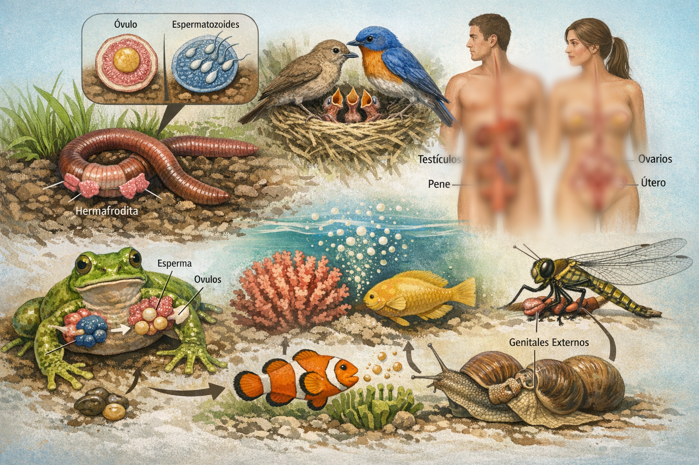
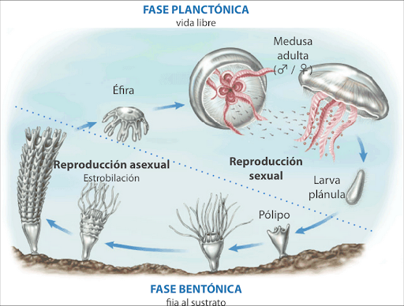
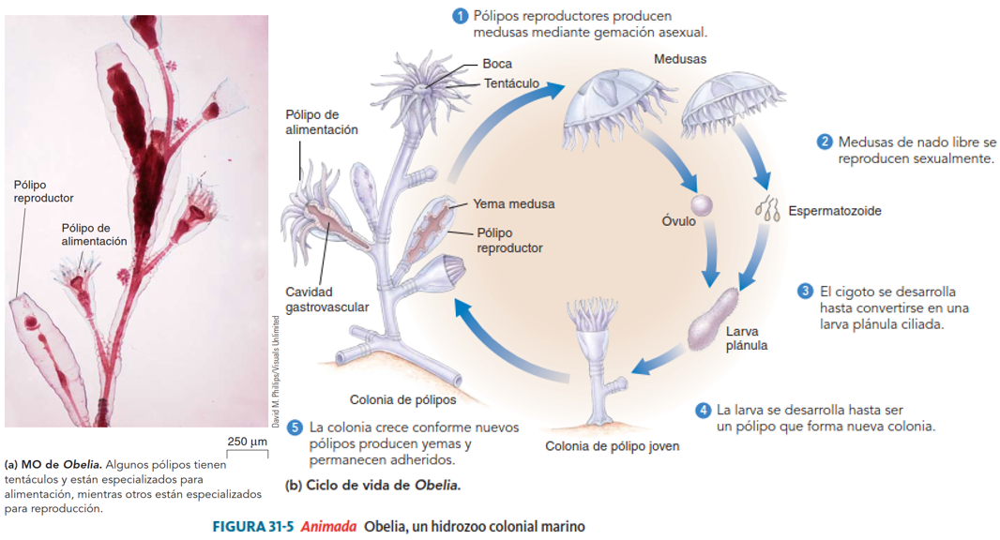
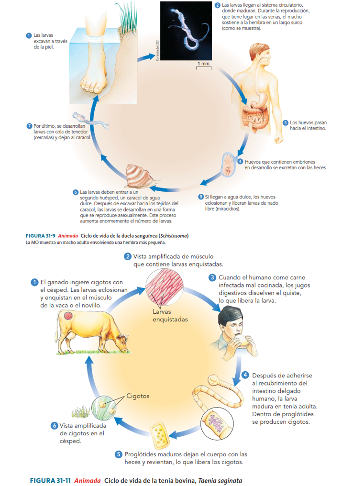
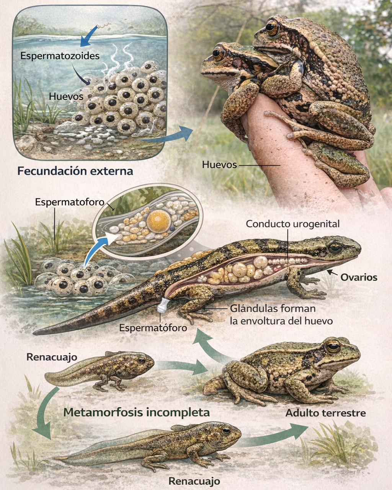
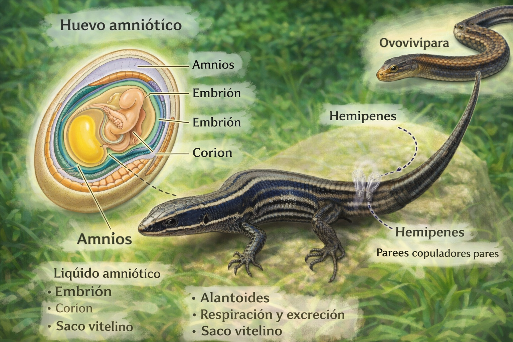
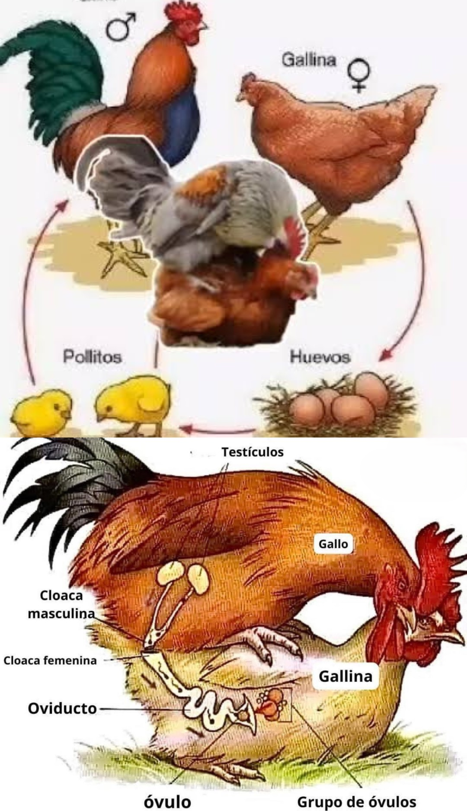
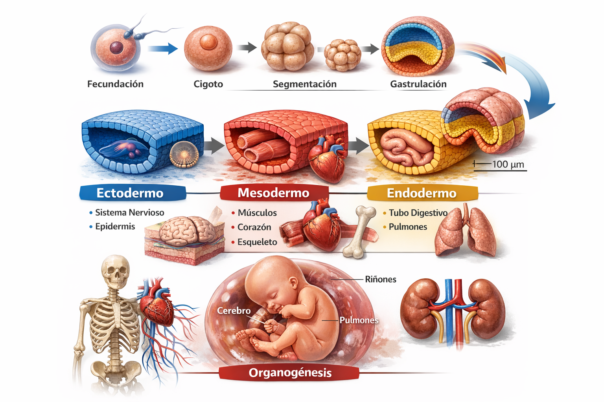
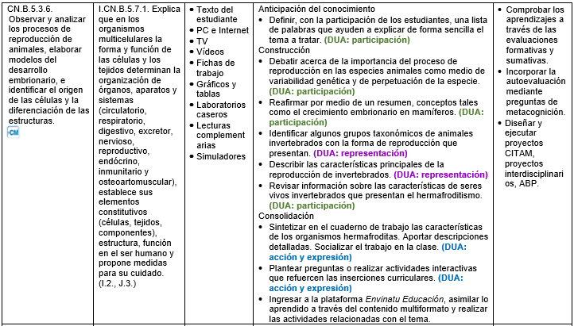

Formas de reproducción en invertebrados y vertebrados
CN.B.5.3.6. Observar y analizar los procesos de reproducción de animales, elaborar modelos del desarrollo embrionario, e identificar el origen de las células y la diferenciación de las estructuras.

Sistemas reproductores y desarrollo en invertebrados
Poríferos (esponjas)
Cnidarios (medusas, corales e hidras)


Platelmintos y nematelmintos (gusanos)

Anélidos (lombrices y sanguijuelas)
Moluscos
En bivalvos y gasterópodos marinos, del cigoto se desarrolla una larva trocófora que luego se transforma en larva velígera. Posteriormente ocurre metamorfosis hasta alcanzar el estado adulto.
Artrópodos
Equinodermos (estrellas de mar)
Sistemas reproductivos y desarrollo en vertebrados
Los vertebrados presentan sexos separados. La fecundación puede ser interna, como en la mayoría de los terrestres y en mamíferos acuáticos, o externa, como en muchos acuáticos.
La mayoría son ovíparos. Los mamíferos son vivíparos. Algunos peces y reptiles son ovovivíparos, lo que significa que el embrión se desarrolla dentro de un huevo retenido en el interior del cuerpo materno hasta su eclosión.
Peces

Anfibios

Reptiles

Aves

Mamíferos
Son vivíparos, excepto los monotremas como el ornitorrinco y las equidnas, que son ovíparos.
Todos presentan fecundación interna y huevo amniótico. Poseen glándulas mamarias para la lactancia y un cuidado parental prolongado.
Según el grupo de mamiferos, hay ciertas caracteristicas en el aparato reproductor:
Prototerios o monotremas
Metaterios o marsupiales
Euterios o placentarios
Desarrollo embrionario en mamíferos

Comprender la reproducción no es solo memorizar si un organismo es ovíparo o vivíparo. Implica analizar cómo la forma y función de las células determinan tejidos, órganos y sistemas, y cómo estos se organizan para perpetuar la vida. Explica también la variabilidad genética, la adaptación y la evolución de las especies.
Especifica la estructura estándar de los sistemas reproductores en animales. ››
¿Qué características generales tienen los vertebrados en su reproducción? ››
Describe la reproducción de los platelmintos y los nematelmintos. ››
Responde las siguintes preguntas
Indicaciones y actividades:
- Trabajo colaborativo: Formen grupos de cuatro personas y elaboren un cuadro sinóptico de las formas de reproducción y desarrollo. Coloquen ejemplos de cada una. Presenten su trabajo al resto de la clase.
- Actividad investigativa: Indaga sobre las formas de reproducción y desarrollo de estos animales.
- Realiza una exposición utilizando las TIC de tu preferencia.
- Diversidad funcional en el aula: El hecho de que haya una discapacidad auditiva no significa que el tono de voz con el que se habla deba ser exagerado o excesivo. Basta con que haya claridad.
- Referencias para la búsqueda: Busca primero en los libros de zoología en la biblioteca de tu institución. Uno de los mejores libros es la Zoología General de Storer y Usinger.
- Sugerencias pedagógicas: Estimular la expectativa de los estudiantes a través de documentales y videos al respecto.
- Nota metodológica breve: Responde las preguntas manteniendo items numéricos; las preguntas y respuestas deberán corresponder en numeración y, si existen, en literales (a, b, c…).
- Los animales tienen gónadas (productoras de gametos) y los conductos genitales (que comunican las gónadas con el exterior). Pueden o no tener genitales externos. ‹‹
2.1 Los vertebrados presentan sexos separados. La fecundación puede ser interna o externa. Los mamíferos son vivíparos; los otros vertebrados son ovíparos. Algunos peces y reptiles son ovovivíparos. ‹‹
2.2 Los de vida libre, como la planaria, tienen varios ovarios y varios testículos; poseen pene y la fecundación es cruzada. Los parásitos, como tremátodos y céstodos (tenias), tienen ciclos reproductores complejos con varios huéspedes intermediarios. ‹‹
4.a Los cnidarios tienen reproducción sexual y asexual. Tienen sexos separados, dimorfismo sexual y son ovíparos. ‹‹
4.b Respuesta abierta. ‹‹
4.c Los cefalópodos y bivalvos son unisexuales; mientras que los gasterópodos son hermafroditas. ‹‹
4.d No tienen gónadas y los gametos se originan a partir de otras células. La unión del óvulo y el espermatozoide produce una larva ciliada. ‹‹
4.e Tienen fecundación interna y cruzada. ‹‹
